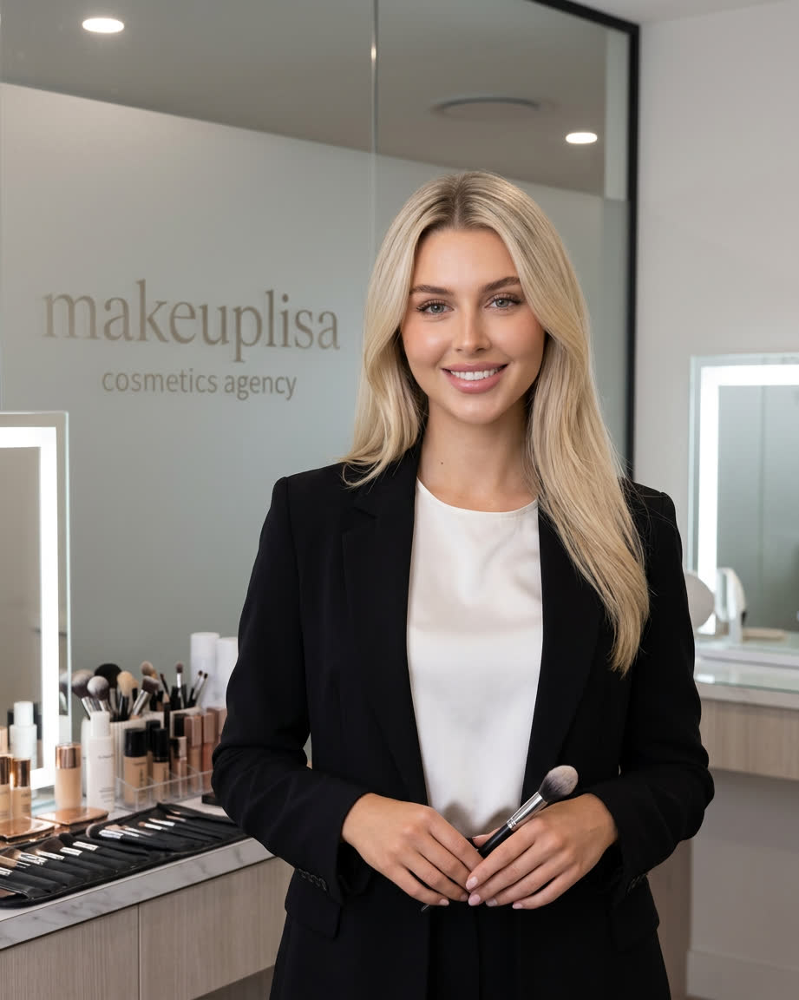

The Visionary
Lisa
Bridging artistic expression and bio-technological precision. As brand director and skincare curator, Lisa is committed to 'Less but Better'—MAKEUP LISA is a skincare house and official VENN partner, not a makeup retailer.
"Beauty isn't about adding more; it's about refining what is already there through the lens of science."
Having navigated the luxury beauty industry with a discerning eye, Lisa has witnessed the profound evolution of skincare. Her deep connection with VENN Skincare stems from a shared belief that modern life demands high-performance results without the clutter of a complex routine.
In her role as brand director and official partner, Lisa curates a collection that represents the pinnacle of South Korean R&D, ensuring every selection delivers visible, science-backed transformations for a global clientele.
Lisa
Brand Director, MAKEUP LISA